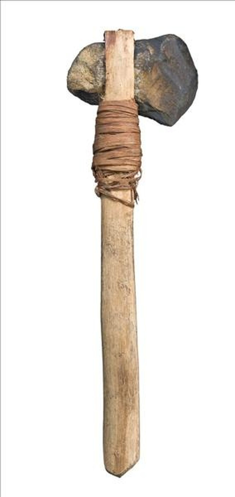
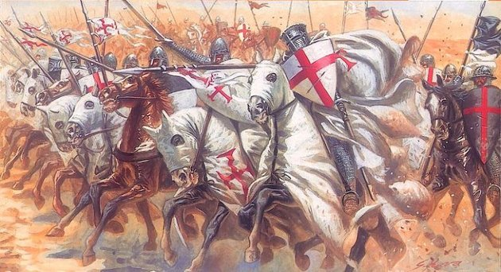

Fegyver történelem
Az emberek mindig is kreatívak voltak akkor, ha arról volt szó hogyan öljük meg saját embertársainkat. A világon szinte az összes iparág közül ennek van a legnagyobb költségvetése.
Már az őskorban is köveket éleztek és botok végére kötötték, hogy távolabbról tudják támadni a prédát vagy ellenséges törzset. Ez az Ókorban csak fejlődött és fejlődött. Ekkor már sok szerepet mutatott a páncélzat melyet vasból, esetleg bronzból, és a gazdagabbak még egy kis arany díszítést is használtak, ekkortájt már a távolharci íjas seregek is fontos részt vettek ki a harcból.
A középkorban nagyon elterjedt volt a lovas lovagok, ebben a korban ők képezték a gazdagok részét, ők már nagyon nehézpáncélzatot viseltek ezért kellet nekik a ló mert nélkülük az akár 50 kg-os páncélban szinte mozgásképtelenek voltak. Viszont a várak ellen nagyon sok mindent nem tudtak tenni ezek a lovagok sem ezért találták fel az ostromgépeket melyekkel hatalmas köveket lendíthettek neki a váraknak ezzel kisseb nagyobb rombolást végezve.
Az új kor leginkább Amerika felfedezéséről szólt hogy ki mennyi részt gyarmatosít be ezért hatalmasat változott a vízi hadviselés.